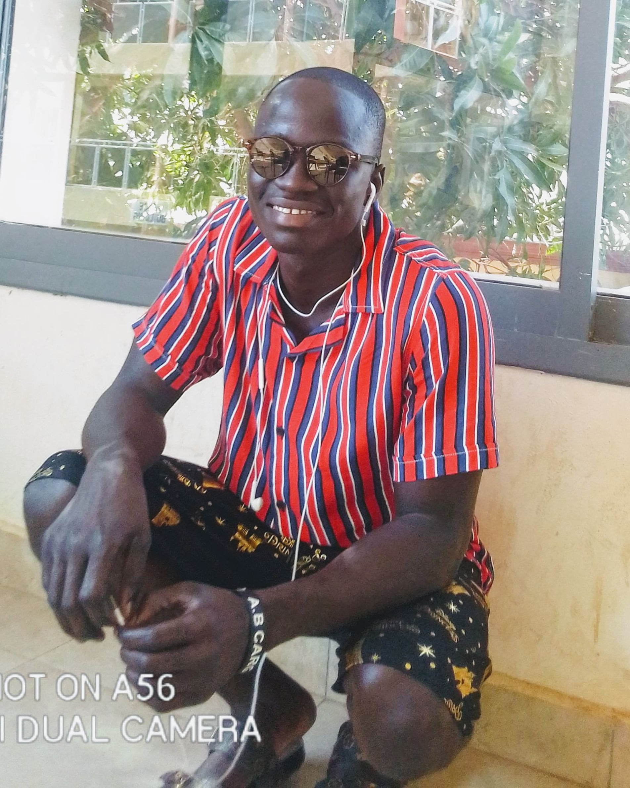

|  |
Modou Lamin Jagne
Modou Lamin Jagne, widely nkown as Modou Lamin or simply MLJ as the abreviation of his name,
is a Gambian. He was born on August 19, 1996, to his mother Fatou Laye and father Mamat Jagne.
As a kid Modou was interested in making things on his own. His education began at an early stage of his life.
He started going to darra at age 4 and enrolled to Latrikunda Yiringanya Lower Basic School the following year.
He was smart in both darra and school. When he was 8 years, his father sent him to Kaolakh, Senegal,
to learn the Qur'an. He spent three and half years in Senegal and returned home in 2008 to continue
his Qur'anic education.While continuing his Qur'anic education, he enrolled again to school in 2009, this time
to Deeper Life School. There he completed his basic and junior school. In September 2016, he joined Nusrat Senior School,
where he completed his O'level in 2019. After completing his O'levels in 2019 and before going to University, he participated in a two weeks IT training ,
organized by Smart Proffesional College, where he earned a certificate.
He is currently pursuing a bachelor's degree in Computer Science at the University of The Gambia.
My contacts
|
|